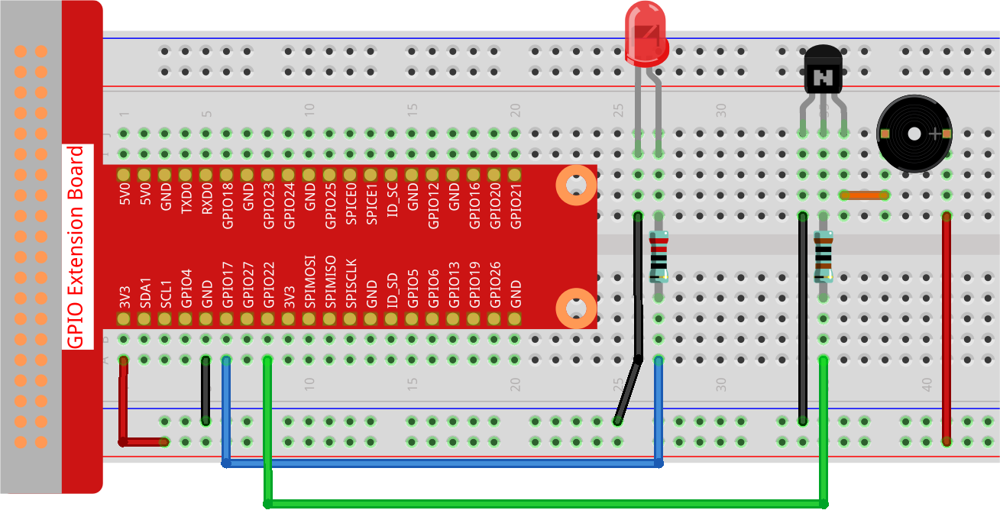

Note
Bonjour, bienvenue dans la communauté des passionnés de Raspberry Pi, Arduino et ESP32 de SunFounder sur Facebook ! Plongez dans l’univers du Raspberry Pi, d’Arduino et de l’ESP32 avec d’autres passionnés.
Pourquoi nous rejoindre ?
Support d’experts : Résolvez les problèmes après-vente et les défis techniques grâce à l’aide de notre communauté et de notre équipe.
Apprendre & Partager : Échangez des astuces et des tutoriels pour améliorer vos compétences.
Aperçus exclusifs : Accédez en avant-première aux annonces de nouveaux produits.
Réductions spéciales : Bénéficiez de réductions exclusives sur nos nouveaux produits.
Promotions festives et concours : Participez à des concours et profitez des promotions spéciales lors des fêtes.
👉 Prêt à explorer et à créer avec nous ? Cliquez sur [Ici] pour nous rejoindre dès aujourd’hui !
3.1.11 Générateur de Code Morse
Introduction
Dans ce projet, nous allons créer un générateur de code Morse, où vous pourrez taper une série de lettres en anglais sur le Raspberry Pi pour qu’elles soient reproduites en code Morse.
Composants Nécessaires
Dans ce projet, nous aurons besoin des composants suivants :

Schéma de Câblage
T-Board Name |
physical |
wiringPi |
BCM |
GPIO17 |
Pin 11 |
0 |
17 |
GPIO22 |
Pin 15 |
3 |
22 |

Procédures Expérimentales
Étape 1 : Construisez le circuit (faites attention aux pôles du buzzer : celui avec l’étiquette + est le pôle positif et l’autre est le pôle négatif).
Étape 2 : Ouvrez le fichier de code.
cd ~/davinci-kit-for-raspberry-pi/python-pi5
Étape 3 : Exécutez le programme.
sudo python3 3.1.11_MorseCodeGenerator.py
Une fois le programme lancé, tapez une série de caractères, et le buzzer ainsi que la LED émettront les signaux correspondants en code Morse.
Avertissement
Si un message d’erreur apparaît RuntimeError: Cannot determine SOC peripheral base address, veuillez vous référer à Si gpiozero ne fonctionne pas.
Code
#!/usr/bin/env python3
from gpiozero import Buzzer, LED
import time
# Initialisation du buzzer et de la LED sur les broches GPIO
BeepPin = Buzzer(22)
ALedPin = LED(17)
# Représentation du code Morse pour chaque caractère
MORSECODE = {
'A': '01', 'B': '1000', 'C': '1010', 'D': '100', 'E': '0', 'F': '0010', 'G': '110',
'H': '0000', 'I': '00', 'J': '0111', 'K': '101', 'L': '0100', 'M': '11', 'N': '10',
'O': '111', 'P': '0110', 'Q': '1101', 'R': '010', 'S': '000', 'T': '1',
'U': '001', 'V': '0001', 'W': '011', 'X': '1001', 'Y': '1011', 'Z': '1100',
'1': '01111', '2': '00111', '3': '00011', '4': '00001', '5': '00000',
'6': '10000', '7': '11000', '8': '11100', '9': '11110', '0': '11111',
'?': '001100', '/': '10010', ',': '110011', '.': '010101', ';': '101010',
'!': '101011', '@': '011010', ':': '111000',
}
def on():
""" Turn on the buzzer and LED. """
BeepPin.on()
ALedPin.on()
def off():
""" Turn off the buzzer and LED. """
BeepPin.off()
ALedPin.off()
def beep(dt): # dt for delay time.
"""
Produce a beep sound and LED flash for the specified duration.
:param dt: Duration for the beep and flash.
"""
on()
time.sleep(dt)
off()
time.sleep(dt)
def morsecode(code):
"""
Convert the input code into Morse code and signal it using the buzzer and LED.
:param code: The text to be converted to Morse code.
"""
pause = 0.25
for letter in code:
for tap in MORSECODE[letter]:
if tap == '0':
beep(pause / 2) # Bip court pour un point
if tap == '1':
beep(pause) # Bip long pour un trait
time.sleep(pause) # Pause entre les lettres
def destroy():
""" Clean up resources on script termination. """
print("")
BeepPin.off()
ALedPin.off()
try:
while True:
code = input("Please input the messenger:")
code = code.upper() # Convertit en majuscules pour la recherche du code Morse
print(code)
morsecode(code)
except KeyboardInterrupt:
destroy()
Explication du Code
Ce script importe les classes Buzzer et LED de la bibliothèque gpiozero. Ces classes sont essentielles pour contrôler les appareils connectés aux broches GPIO du Raspberry Pi.
#!/usr/bin/env python3 from gpiozero import Buzzer, LED import time
Initialise le buzzer sur la broche GPIO 22 et la LED sur la broche GPIO 17, permettant ainsi de contrôler ces composants.
# Initialisation du buzzer et de la LED sur les broches GPIO BeepPin = Buzzer(22) ALedPin = LED(17)
Définit la structure
MORSECODE, un dictionnaire contenant les représentations du code Morse pour les lettres A-Z, les chiffres 0-9 et des symboles comme « ? », « / », « : », « , », « . », « ; », « ! », « @ ». Le0correspond à un point et le1à un tiret.# Représentation du code Morse pour chaque caractère MORSECODE = { 'A': '01', 'B': '1000', 'C': '1010', 'D': '100', 'E': '0', 'F': '0010', 'G': '110', 'H': '0000', 'I': '00', 'J': '0111', 'K': '101', 'L': '0100', 'M': '11', 'N': '10', 'O': '111', 'P': '0110', 'Q': '1101', 'R': '010', 'S': '000', 'T': '1', 'U': '001', 'V': '0001', 'W': '011', 'X': '1001', 'Y': '1011', 'Z': '1100', '1': '01111', '2': '00111', '3': '00011', '4': '00001', '5': '00000', '6': '10000', '7': '11000', '8': '11100', '9': '11110', '0': '11111', '?': '001100', '/': '10010', ',': '110011', '.': '010101', ';': '101010', '!': '101011', '@': '011010', ':': '111000', }
La fonction
on()allume le buzzer et la LED. La fonctionoff()les éteint.def on(): """ Turn on the buzzer and LED. """ BeepPin.on() ALedPin.on() def off(): """ Turn off the buzzer and LED. """ BeepPin.off() ALedPin.off()
Définit la fonction
beep()qui permet au buzzer et à la LED de produire des sons et des clignotements pendant un intervalle défini pardt.def beep(dt): # dt représente la durée. """ Produce a beep sound and LED flash for the specified duration. :param dt: Duration for the beep and flash. """ on() time.sleep(dt) off() time.sleep(dt)
La fonction
morsecode()traite le code Morse des caractères d’entrée en activant le son ou la lumière pour chaque « 1 » et en effectuant une émission courte pour chaque « 0 ». Par exemple, pour l’entrée « SOS », il y aura un signal de trois points courts, trois traits longs, puis trois points courts « · · · - - - · · · ».def morsecode(code): """ Convert the input code into Morse code and signal it using the buzzer and LED. :param code: The text to be converted to Morse code. """ pause = 0.25 for letter in code: for tap in MORSECODE[letter]: if tap == '0': beep(pause / 2) # Bip court pour le point if tap == '1': beep(pause) # Bip long pour le tiret time.sleep(pause) # Pause entre les lettres
Définit une fonction nommée
destroyqui désactive le buzzer et la LED. Cette fonction est utilisée pour libérer les ressources lorsque le script est arrêté afin de s’assurer que les broches GPIO ne restent pas actives.def destroy(): """ Clean up resources on script termination. """ print("") BeepPin.off() ALedPin.off()
Lorsque vous tapez les caractères pertinents avec le clavier,
upper()convertit les lettres en majuscules.print()affiche le texte sur l’écran de l’ordinateur, et la fonctionmorsecode()fait en sorte que le buzzer et la LED émettent le code Morse correspondant.try: while True: code = input("Please input the messenger:") code = code.upper() # Convertit en majuscules pour le code Morse print(code) morsecode(code) except KeyboardInterrupt: destroy()